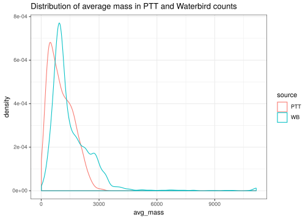
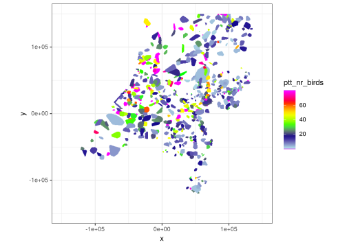
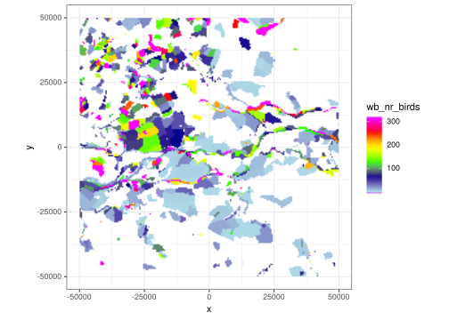
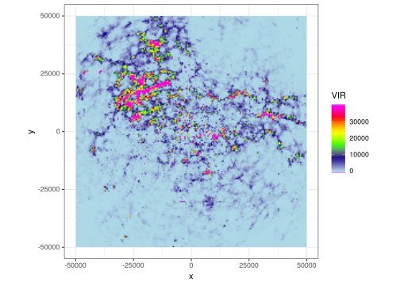
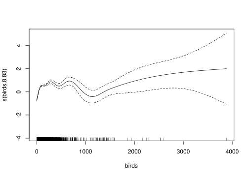
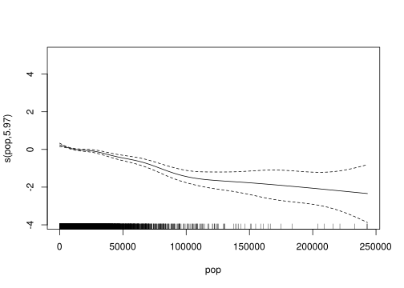
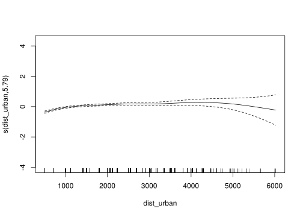

6 Exploring fireworks disturbance
We have so far:
- Pre-processed the radar data, by removing clutter and applying the range-bias correction (Kranstauber et al. 2020).
- Annotated the PPIs with land use classes, distance to urban areas and (human) population density.
- Annotated the PPIs with corresponding count locations for the Sovon data.
- Connected the Sovon count data with life-history characteristics for the species contained within.
With the annotated PPIs and the processed Sovon counts, we can start to explore the relation between fireworks disturbance and the birds measured aloft during NYE 2017-2018.
The following parameters we assume are important predictors for measured bird densities aloft:
- The number of birds on the ground.
- The average mass of the birds on the ground.
- The take-off habitat of these birds
- The population density in the vicinity of birds, corrected for the distance to urban areas.
6.1 Setting-up the environment
Load the required packages.
## Loading required package: nlme##
## Attaching package: 'nlme'## The following object is masked from 'package:raster':
##
## getData## The following object is masked from 'package:dplyr':
##
## collapse## This is mgcv 1.8-31. For overview type 'help("mgcv-package")'.library(ggplot2)
library(dplyr)
library(tidyr)
library(ggdark)
library(bioRad)
library(raster)
library(dismo)
library(gbm)## Loaded gbm 2.1.5And the files we have generated so far.
6.2 Calculating bird parameters
We need to calculate the number of birds on the ground and average mass of these birds
wb_raw %>%
mutate(area_nr = as.character(area_nr)) %>%
filter(year == 2018) %>%
group_by(area_nr) %>%
summarise(nr_birds = sum(number),
avg_mass = weighted.mean(mean_weight, number)) %>%
ungroup() %>%
group_by(area_nr) %>%
summarise(nr_birds = mean(nr_birds),
avg_mass = mean(avg_mass)) -> wb
ptt_raw %>%
filter(year == 2017) %>%
group_by(route) %>%
summarise(nr_birds = sum(number),
avg_mass = weighted.mean(mean_weight, number)) %>%
ungroup() %>%
group_by(route) %>%
summarise(nr_birds = mean(nr_birds),
avg_mass = mean(avg_mass)) -> pttIdeally, both the wb and ptt datasets cover somewhat different species compositions. We can easily see this if we visualise the distributions of mean_weight for these datasets.
bind_rows(dplyr::select(wb, nr_birds, avg_mass), dplyr::select(ptt, nr_birds, avg_mass), .id = "source") %>%
mutate(source = case_when(
source == 1 ~ "WB",
source == 2 ~ "PTT"
)) %>%
ggplot(aes(x = avg_mass)) +
geom_density(aes(group = source, color = source)) +
labs(title = "Distribution of average mass in PTT and Waterbird counts")## Warning: Removed 3 rows containing non-finite values (stat_density).
And indeed, the distributions of avg_mass for PTT counts is shifted considerably to lower average weights.
6.3 Connecting Sovon counts with the PPIs
Now that we have calculated the necessary ‘bird parameters’, we can attach these to the PPIs using a few simple left_joins. Subsequently, we will recalculate the avg_mass as the mean of average masses in the PTT and waterbird counts, and nr_birds by adding the numbers of birds in the PTT and waterbird counts together. The former is probably not particularly useful, so probably best to throw out at some point.
ppi_hrw$data@data %>%
left_join(dplyr::select(wb, area_nr, nr_birds, avg_mass), by = c("wb_area_nr" = "area_nr")) %>%
rename(wb_nr_birds = nr_birds, wb_avg_mass = avg_mass) %>%
group_by(wb_area_nr) %>%
mutate(wb_nr_birds = wb_nr_birds / n()) %>%
ungroup() %>%
left_join(dplyr::select(ptt, route, nr_birds, avg_mass), by = c("ptt_route" = "route")) %>%
rename(ptt_nr_birds = nr_birds, ptt_avg_mass = avg_mass) %>%
group_by(ptt_route) %>%
mutate(ptt_nr_birds = ptt_nr_birds / n()) %>%
ungroup() %>%
mutate(nr_birds = wb_nr_birds + ptt_nr_birds,
avg_mass = mean(c(wb_avg_mass, ptt_avg_mass), na.rm = TRUE)) -> ppi_hrw$data@data## Warning: Column `wb_area_nr`/`area_nr` joining factor and character vector, coercing into character vectorppi_dhl$data@data %>%
left_join(dplyr::select(wb, area_nr, nr_birds, avg_mass), by = c("wb_area_nr" = "area_nr")) %>%
rename(wb_nr_birds = nr_birds, wb_avg_mass = avg_mass) %>%
group_by(wb_area_nr) %>%
mutate(wb_nr_birds = wb_nr_birds / n()) %>%
ungroup() %>%
left_join(dplyr::select(ptt, route, nr_birds, avg_mass), by = c("ptt_route" = "route")) %>%
rename(ptt_nr_birds = nr_birds, ptt_avg_mass = avg_mass) %>%
group_by(ptt_route) %>%
mutate(ptt_nr_birds = ptt_nr_birds / n()) %>%
ungroup() %>%
mutate(nr_birds = wb_nr_birds + ptt_nr_birds,
avg_mass = mean(c(wb_avg_mass, ptt_avg_mass), na.rm = TRUE)) -> ppi_dhl$data@data## Warning: Column `wb_area_nr`/`area_nr` joining factor and character vector, coercing into character vector6.4 Correcting for dispersion
As birds can cross substantial distances within 5 minutes (the period a single scan takes), we somehow have to take this into account during the modelling. A simple approach is to ‘smooth’ out the numbers of birds in space, by averaging the bird numbers within a given window around a focal cell. We will create a simple function to do that
smooth_ppi <- function(ppi, var, gridsize = c(3, 3)) {
weights <- matrix(1, nrow = gridsize[1], ncol = gridsize[2])
smooth_raster <- raster(ppi$data[var])
smooth_nonan <- smooth_raster
smooth_nonan[is.na(smooth_nonan)] <- 0
smooth_raster <- focal(smooth_nonan, w = weights, fun = mean, pad = TRUE, padValue = 0)
return(unlist(as.data.frame(as(smooth_raster, "Raster"))))
}
ppi_hrw$data$birds_smooth_9 <- smooth_ppi(ppi_hrw, "wb_nr_birds")
ppi_hrw$data$birds_smooth_15 <- smooth_ppi(ppi_hrw, "wb_nr_birds", gridsize = c(5, 5))
ppi_dhl$data$birds_smooth_9 <- smooth_ppi(ppi_dhl, "wb_nr_birds")
ppi_dhl$data$birds_smooth_15 <- smooth_ppi(ppi_dhl, "wb_nr_birds", gridsize = c(5, 5))


ppi_hrw_mass <- ppi_hrw$data@data
ppi_hrw_mass %>%
filter(VIR > 50 & wb_nr_birds > 0 & type == "rural" & VIR < quantile(ppi_hrw_mass$VIR, 0.99, na.rm = TRUE)) %>%
# filter(birds_smooth_9 < quantile(ppi_hrw_mass$birds_smooth_9, 0.99, na.rm = TRUE)) %>%
mutate(vid_new = VIR / wb_avg_mass,
birds = wb_nr_birds * wb_avg_mass,
# pop_eff = pop / (dist_urban / 1000),
pop_eff = pop * (1 / dist_urban),
birds_smooth_log = log(birds_smooth_9)) %>%
group_by(pop_eff) %>%
mutate(avg_mass_pop = mean(wb_avg_mass),
avg_birds_pop = mean(birds_smooth_9),
sum_birds_pop = sum(birds_smooth_9),
sum_vid_pop = sum(vid_new),
birds = mean(c(birds_smooth_9, wb_nr_birds), drop.na = TRUE)) %>%
ungroup() %>%
mutate(sum_birds_pop = scale(sum_birds_pop, scale = TRUE, center = TRUE) * 10 + 10,
sum_vid_pop = scale(sum_vid_pop, scale = TRUE, center = TRUE) * 10 + 10) %>%
group_by(vid_new) %>%
mutate(avg_mass_pop_vid = mean(wb_avg_mass),
avg_birds_pop_vid = mean(birds_smooth_9)) %>%
ungroup() %>%
mutate(landuse_overall =
case_when(
(landuse >= 100 & landuse < 200) ~ "Urban",
(landuse >= 200 & landuse < 300) ~ "Agricultural areas",
(landuse >= 300 & landuse < 500) ~ "Natural areas",
(landuse >= 500 & landuse < 999) ~ "Water bodies"
)) %>%
dplyr::select(VIR, wb_nr_birds, birds, birds_smooth_9, birds_smooth_15, pop, dist_urban, pop_eff, landuse_overall) %>%
drop_na() -> ppi_mdl
# drop_na() -> ppi_mdl
# ppi_hrw$data@data %>%
# filter(VIR > 0 & VIR < quantile(ppi_hrw$data@data$VIR, 0.99, na.rm = TRUE)) %>%
# filter(birds_smooth_9 > 0 & birds_smooth_9 < quantile(ppi_hrw$data@data$VIR, 0.99, na.rm = TRUE)) %>%
# filter(type == "rural") %>%
# mutate(landuse_overall = case_when(
# (landuse >= 100 & landuse < 200) ~ "Urban",
# (landuse >= 200 & landuse < 300) ~ "Agriculture",
# (landuse >= 300 & landuse < 500) ~ "Nature",
# (landuse >= 500 & landuse < 999) ~ "Water bodies"
# )) %>%
# drop_na() -> ppi_mdl
# m1 <- glm(VIR ~ wb_nr_birds + pop + dist_urban + landuse_overall, data = ppi_mdl, family = Gamma(link = "log"))
m1 <- gam(VIR ~ s(birds) + s(pop) + s(dist_urban, k = 20) + landuse_overall,
data = ppi_mdl, method = "REML", family = Gamma(link = "log"))
# gam(vid_new ~ s(birds_smooth_9, k = 20) + s(pop) + s(dist_urban) + s(pop_eff) + landuse_overall, data = ppi_mdl, method = "REML", family = Gamma(link = "log")) -> m1
summary(m1)
plot(m1)


##
## Family: Gamma
## Link function: log
##
## Formula:
## VIR ~ s(birds) + s(pop) + s(dist_urban, k = 20) + landuse_overall
##
## Parametric coefficients:
## Estimate Std. Error t value Pr(>|t|)
## (Intercept) 8.12346 0.01942 418.398 < 2e-16 ***
## landuse_overallNatural areas -0.41492 0.07707 -5.383 7.48e-08 ***
## landuse_overallWater bodies -0.21466 0.03990 -5.380 7.62e-08 ***
## ---
## Signif. codes: 0 '***' 0.001 '**' 0.01 '*' 0.05 '.' 0.1 ' ' 1
##
## Approximate significance of smooth terms:
## edf Ref.df F p-value
## s(birds) 8.828 8.989 105.25 <2e-16 ***
## s(pop) 5.969 7.131 24.78 <2e-16 ***
## s(dist_urban) 6.396 7.879 13.90 <2e-16 ***
## ---
## Signif. codes: 0 '***' 0.001 '**' 0.01 '*' 0.05 '.' 0.1 ' ' 1
##
## R-sq.(adj) = 0.0867 Deviance explained = 15.4%
## -REML = 88039 Scale est. = 2.5243 n = 9800
##
## Method: REML Optimizer: outer newton
## full convergence after 6 iterations.
## Gradient range [-0.01160811,0.003783274]
## (score 88038.6 & scale 2.524317).
## Hessian positive definite, eigenvalue range [0.3122335,6841.866].
## Model rank = 40 / 40
##
## Basis dimension (k) checking results. Low p-value (k-index<1) may
## indicate that k is too low, especially if edf is close to k'.
##
## k' edf k-index p-value
## s(birds) 9.00 8.83 0.72 <2e-16 ***
## s(pop) 9.00 5.97 0.81 0.42
## s(dist_urban) 19.00 6.40 0.84 0.98
## ---
## Signif. codes: 0 '***' 0.001 '**' 0.01 '*' 0.05 '.' 0.1 ' ' 1# ppi_mdl %>%
# filter(VIR > 0) %>%
# mutate(VIR_log10 = log10(VIR),
# landuse_overall = case_when(
# landuse_overall == "Agricultural areas" ~ 1,
# landuse_overall == "Water bodies" ~ 2,
# landuse_overall == "Natural areas" ~ 3
# ))-> ppi_bt
#
# ppi_bt$landuse_overall <- as.numeric(ppi_bt$landuse_overall)
#
# ppi_bt <- as.data.frame(ppi_bt)
#
# response <- "VIR_log10"
# predictors <- c("wb_nr_birds", "birds", "birds_smooth_9", "pop", "dist_urban", "pop_eff", "landuse_overall")
#
# bt <- gbm.step(data = ppi_bt, gbm.x = 2:8, gbm.y = 10, tree.complexity = 2, bag.fraction = 0.5, family = "gaussian")References
Kranstauber, Bart, Willem Bouten, Hidde Leijnse, Berend-Christiaan Wijers, Liesbeth Verlinden, Judy Shamoun-Baranes, and Adriaan M Dokter. 2020. “High-Resolution Spatial Distribution of Bird Movements Estimated from a Weather Radar Network.” Remote Sensing 12 (4). Multidisciplinary Digital Publishing Institute: 635.